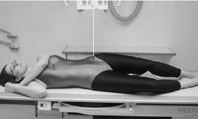

Sacroiliac Joint(AP-Oblique)
Centering point:Centre 2.5 cm medial to the anterior superior iliac spine on
the raised side (the side under examination), with the central
ray perpendicular to the cassette.

Cassette Size:24cm x 30cm (12 x 10 ins)
Potrait
Exposure Factors:75kVp on
20MaS
FFD:100cm
Bucky/Grid:Moving or Stationary Grid
Filter:No
Collimation:The primary beam is collimated to the area of interest.
Pathologies:Lower back pain
Position of patient and cassette
- The patient lies supine on the table.
- From this position, the patient is rotated 15–25 degrees on to
the side not being examined.
- The anterior superior iliac spine on the raised side should lie
just lateral to the posterior superior iliac spine.
-
The raised side is supported with non-opaque pads placed
under the trunk and the raised thigh.
- Pads may be placed between the knees for comfort.